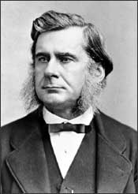

Thomas Huxley
1825–1895
Thomas Henry Huxley was born just outside of London in 1825, the seventh of eight children in a family of limited means. His childhood education consisted of two years at a local school where his father taught math. At 10 years old, his formal schooling ended when his family moved to Coventry, but this did not suppress his appetite for knowledge. He taught himself German and read books on science, history, and philosophy. He became a medical apprentice at the age of 15, and before long he earned a scholarship to study at Charing Cross Hospital.
When Huxley was 21, he became an assistant surgeon on a navy ship. During the ship's journeys through the waters surrounding Australia and New Guinea, he collected and studied marine invertebrates, and sent his findings back to England. During this time he also met his future wife, an Australian woman with whom he fell in love during a stop in Sydney.
Huxley's research during his navy years earned him the respect of the contemporary scientific community. When he returned to England in 1850, he soon met some of the most prominent scientists of his day—including Charles Darwin. In 1851 he was accepted into the Royal Society, the British national academy of science. Huxley supplemented his navy income by writing science articles for the popular press while he continued his own research in vertebrate and invertebrate biology and paleontology.
At first, Huxley opposed the theory of evolutionary change, but as he continued his studies, he eventually came to accept the idea. When Darwin published his theory of natural selection, Huxley was quick to recognize the validity of Darwin's ideas. In fact, Huxley is sometimes referred to as "Darwin's bulldog," because he was one of the most outspoken advocates of Darwin's theory, publicly debating scientific, religious, and philosophic leaders who resisted the idea of evolution.
During his lifetime, Huxley was known for his social and political views as well as for his scientific work. He campaigned for a better educational system and he coined the term "agnostic" to describe people like himself who are skeptical of anything that could not be proven scientifically. In his later life, Huxley held numerous public offices, serving on 10 royal commissions and England's Privy Council.